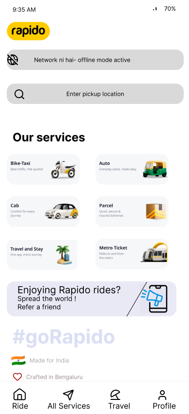

01 · INDEPENDENT PRODUCT CONCEPTWhen the network disappears, the journey shouldn't.
Rapido · No-Network Booking
How might a ride-booking product preserve continuity when internet connectivity is unreliable?
Problem Connectivity can interrupt a time-sensitive
booking.Focus Continuity, fallback behaviour, trust and recovery.